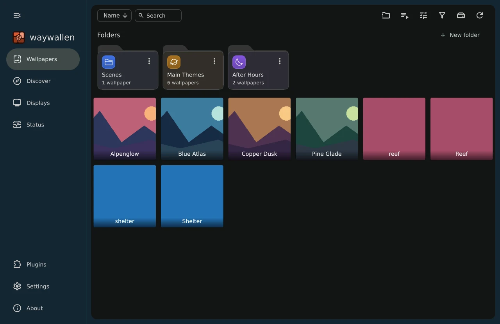

Waywallen Custom for Linux
Your desktopcomes alive.
Fine-tune living wallpapers, build a theme, and give every scene a place in your library.
Scene Colors
Grade a scene live.
See the color change as you move a slider. The renderer stores adjustments for each wallpaper, so every scene can keep its own look.
Wallpaper folders
A library you can find your way around.
Group wallpapers by project, mood, or display. Name each folder, pick its icon and color, and move a batch of wallpapers into it in one go.
See the real library

Launcher themes
Give the app a new atmosphere.
Start with Tidepool or create your own theme. Set colors for the frame, panels, and buttons. Add a texture or a motion effect when you want more depth.
Linux setup
Bring it to your desktop.
The x86-64 Flatpak includes Scene Colors. Accept the invitation to the private Waywallen repo and sign in to GitHub to download it.
-
Install the Flatpak.
Download the custom Flatpak, install it, and run the
custombranch. Check desktop integration for your Linux environment.flatpak install --user ./Waywallen-Arch-Themes-x86_64.flatpak flatpak run --user --branch=custom org.waywallen.waywallen -
Add your Wallpaper Engine library.
Open Wallpapers → Library Manager, add a Wallpaper Engine source, and select the Steam library directory that contains
steamapps. -
Open a scene and tune it.
Select Live preview. Under Color adjustments, switch on Show color options and use the sliders.